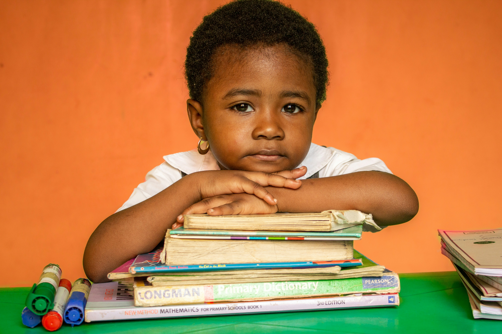
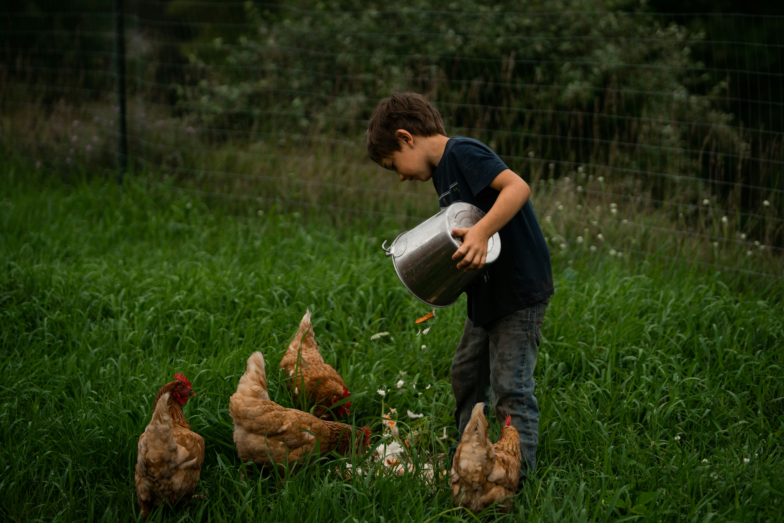
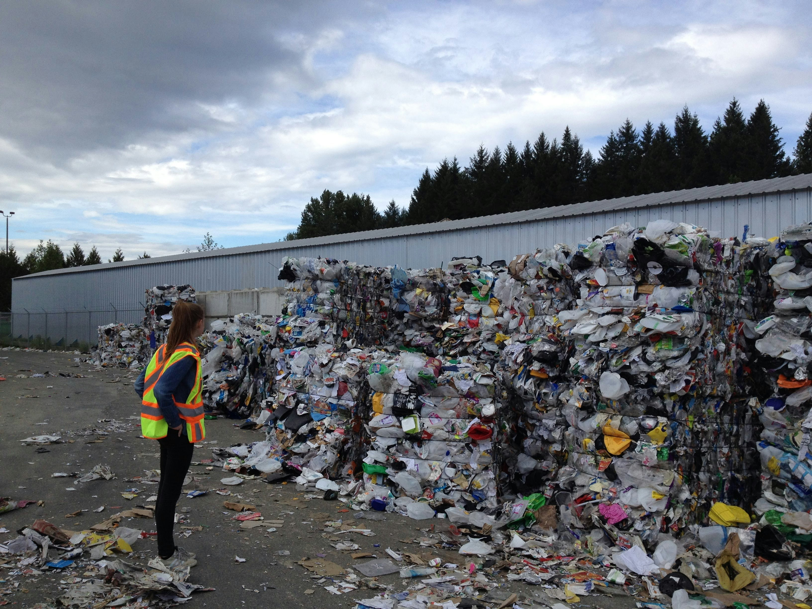
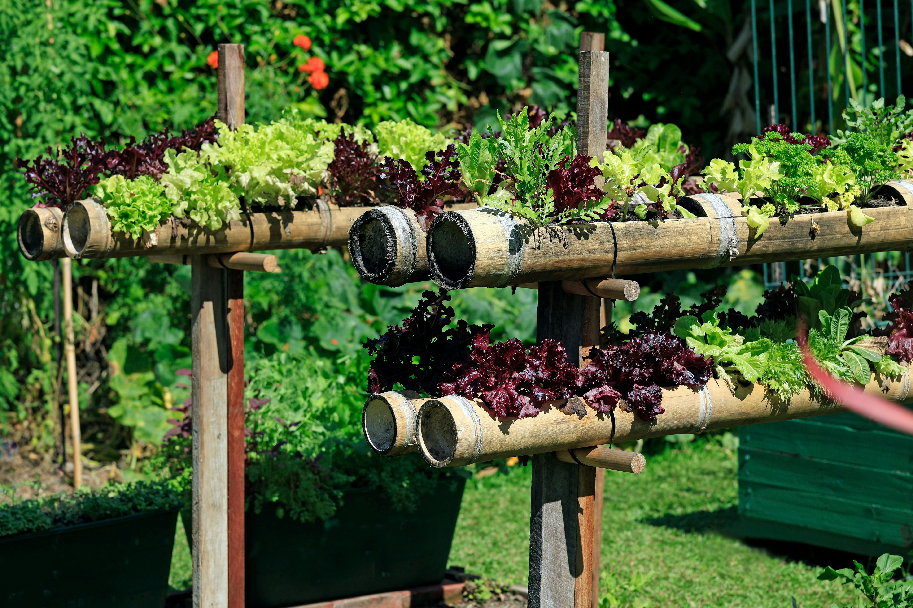
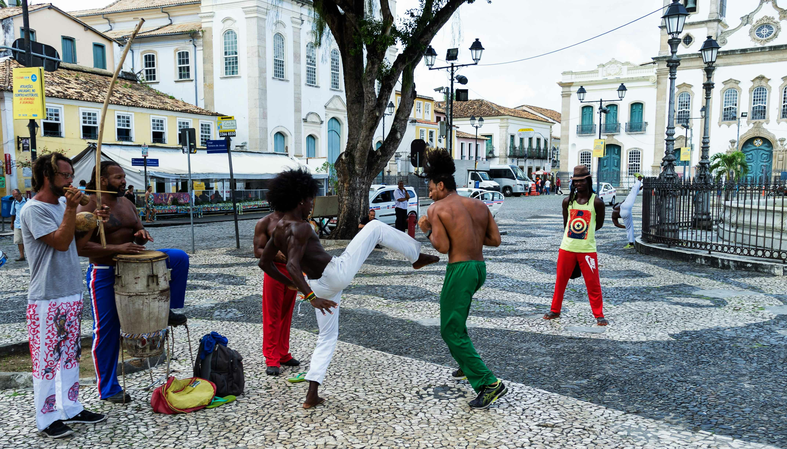
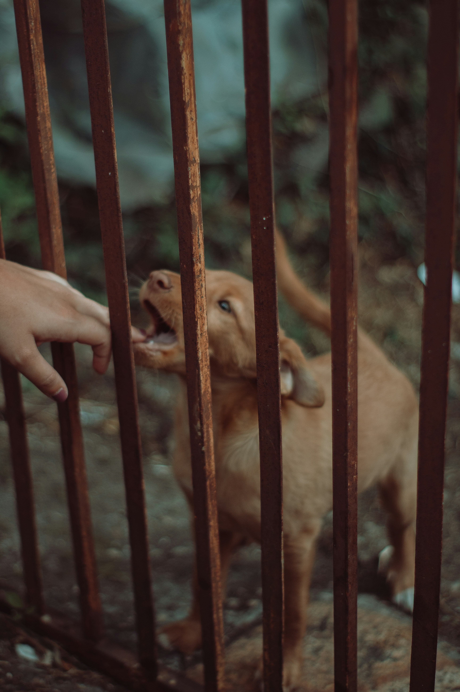

Nossos projetos
Conheça em detalhes cada uma das iniciativas que movem nossa organização e transformam vidas em nossa comunidade.

Projeto Criança Feliz
Oferecemos reforço escolar e atividades lúdicas para crianças em situação de vulnerabilidade, garantindo um futuro mais brilhante.
Ver Detalhes
Sopa Solidária
Distribuição semanal de alimentos nutritivos e agasalhos para a população em situação de rua da nossa cidade.
Ver Detalhes
Capacitação Profissional
Cursos e workshops para jovens e adultos que buscam uma nova oportunidade no mercado de trabalho.
Ver Detalhes
Horta Comunitária
Cultivo de alimentos orgânicos em espaços urbanos ociosos, promovendo segurança alimentar e integração.
Ver Detalhes
Arte e Cultura na Periferia
Oficinas de teatro, música e artes visuais para jovens, incentivando a expressão e o talento local.
Ver Detalhes
Adoção de Animais
Feiras de adoção e cuidados veterinários para cães e gatos resgatados, buscando um lar amoroso para eles.
Ver Detalhes